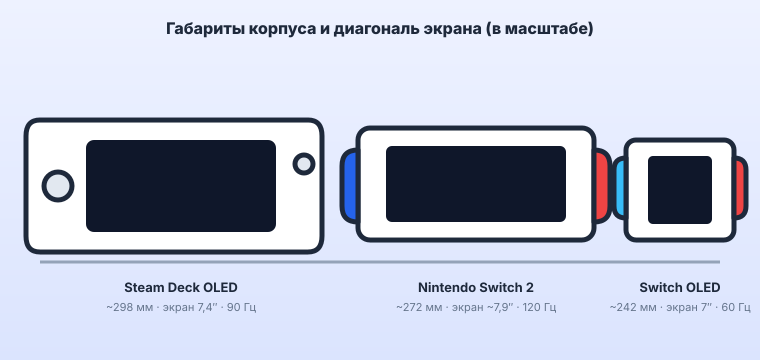

К 2026 году выбор портативной консоли перестал быть дилеммой из двух вариантов. На столе одновременно три разных подхода: Valve Steam Deck OLED — открытый ПК в форм-факторе наладонника, Nintendo Switch 2 — первое за восемь лет полноценное обновление гибрида с чипом на архитектуре Ampere, и всё ещё живой Nintendo Switch OLED, который подешевел в рознице и опирается на библиотеку из тысяч игр. Разбираем, кому какой вариант подходит — и что на самом деле стоит за «прокачанным» сценарием владения старым Switch.
1. Три философии, а не три уровня мощности
Сравнивать эти устройства «в лоб» по гигагерцам бессмысленно: они решают разные задачи.
- Steam Deck OLED — это ПК. SteamOS на базе Linux, полный доступ к рабочему столу, любые сторонние лаунчеры и софт, легальная эмуляция. Свобода в обмен на вес и возню с настройками.
- Nintendo Switch 2 — закрытая консоль нового поколения. Чип Nvidia Tegra T239 с тензорными ядрами и аппаратным DLSS, обратная совместимость с играми Switch, отполированный, но строго ограниченный опыт.
- Nintendo Switch OLED — предыдущее поколение. Слабый по меркам 2026 года Tegra X1 и экран 720p/60 Гц, но самый лёгкий корпус, эталонный режим сна и огромный каталог.
2. Сводная таблица характеристик
| Параметр | Steam Deck OLED | Nintendo Switch 2 | Nintendo Switch OLED |
|---|---|---|---|
| Чип (SoC) | AMD APU «Sephiroth» (Zen 2 + RDNA 2, 6 нм) | Nvidia Tegra T239 (8× Arm A78C + GPU Ampere, тензорные и RT-ядра) | Nvidia Tegra X1 (4× Arm A57 + GPU Maxwell) |
| Экран | 7.4″ OLED, 1280×800, 90 Гц, HDR, до 1000 нит | ≈7.9″ LCD, 1920×1080, до 120 Гц, HDR, VRR | 7″ OLED, 1280×720, 60 Гц, без HDR |
| Оперативная память | 16 ГБ LPDDR5 | 12 ГБ LPDDR5X | 4 ГБ LPDDR4 |
| Накопитель | 512 ГБ NVMe SSD + microSD | 256 ГБ UFS + microSD Express | 64 ГБ eMMC + microSD |
| Апскейл | AMD FSR (программный) | Аппаратный DLSS (тензорные ядра) | Нет |
| Библиотека | Весь Steam + сторонние магазины + эмуляторы | Игры Switch 2 + обратная совместимость со Switch | Каталог Switch (тысячи игр) |
| Онлайн-сервис | Steam (бесплатно) | Nintendo Switch Online (платно) | Nintendo Switch Online (платно) |
| Вес | ~640 г | ~530 г (с Joy-Con 2) | ~420 г (с Joy-Con) |
| Автономность в игре | 2–9 ч (зависит от TDP) | 2–6.5 ч | 4.5–7 ч |
| Открытость платформы | Полный доступ из коробки | Закрытая | Закрытая |
Часть характеристик Switch 2 (разрешение экрана, точные частоты, объём накопителя) приведена по официальным анонсам Nintendo и может уточняться в ревизиях.

3. Nintendo Switch 2: что даёт чип Tegra T239
Главное, за что Switch 2 просит денег нового поколения, — это связка кастомного чипа Nvidia и фирменного апскейла.
- Архитектура. T239 — это восемь ядер Arm Cortex-A78C и графика на архитектуре Ampere (тот же класс, что в десктопных RTX 30-й серии) в мобильном теплопакете. По «сырой» вычислительной мощности в портативе консоль сопоставима со Steam Deck, а в доке уходит вперёд.
- Тензорные ядра и аппаратный DLSS. Ключевое преимущество перед всем портативным железом: игра рендерится во внутреннем низком разрешении, а нейросеть на тензорных ядрах достраивает кадр до 1080p в портативе или до 4K в доке. Это даёт картинку заметно чище, чем позволяют «честные» ватты, и без размытия программного FSR у Steam Deck.
- Рейтрейсинг. Ampere приносит аппаратные RT-ядра, но в мобильном бюджете трассировка используется точечно — отдельные отражения и тени, а не полноценный path tracing.
- Обратная совместимость. Switch 2 запускает подавляющее большинство игр оригинального Switch — и цифровые покупки, и картриджи. Часть тайтлов получает бесплатные или платные патчи с поднятым разрешением и частотой кадров.
- Закрытая экосистема на старте. Обратная сторона отполированности — тонкий каталог собственных релизов в первый год и жёстко закрытая система: сторонних магазинов нет, доступа к рабочему столу нет, привязка к аккаунту и региону такая же строгая, как раньше. Вы платите за предсказуемость, а не за свободу.
4. Steam Deck OLED: открытый ПК без паяльника
Всё, что на консолях Nintendo требует вмешательства в железо, на Steam Deck — штатная функция, не влияющая на гарантию.
- Открытость из коробки. Режим рабочего стола, установка Windows второй системой, любой лаунчер (Epic, GOG, EA, Battle.net), браузер, сторонний софт — всё легально и штатно.
- Экран. 7.4″ OLED, 90 Гц и настоящий HDR до 1000 нит — по совокупности лучший дисплей в портативном сегменте; плавность 90 Гц ощутимо приятнее 60 Гц у Switch OLED.
- EmuDeck. Установщик в один клик разворачивает и настраивает набор эмуляторов (от NES до GameCube, PS2, Wii U) с готовыми профилями управления и обложками. Легально — при использовании собственных дампов картриджей и дисков.
- Decky Loader. Менеджер плагинов для игрового режима: тонкая настройка HDR и частоты обновления, мониторинг, управление вентилятором, темы оформления. Официально Valve его не поддерживает, но он не требует вскрытия корпуса и удаляется в пару кликов.
- Минусы. Вес 640 г, 2–2.5 часа в тяжёлых AAA, и часть новинок 2026 года требует ручной возни с настройками и апскейлом ради стабильных 30–40 кадров.
Раскрыть Steam Deck на полную помогает обвес: док-станция с HDMI 4K и Ethernet для игры на телевизоре, защитный кейс для поездок, стекло на экран и сменные термопрокладки. На AliExpress весь набор дешевле фирменного.
Смотреть док-станции и аксессуары для Steam Deck на AliExpressРеклама. ООО "АЛИБАБА.КОМ (РУ)", ИНН 7703380158, erid: 2bL9aMPo2e49hMef4pdzo6JkYp
5. «Прокачанный» Switch OLED в 2026: чем живёт модифицированная консоль и чем это грозит
Вокруг оригинального Switch сложилась крупная сцена аппаратной модификации. Знать о ней стоит хотя бы для того, чтобы осознанно отказаться: почти все её сценарии нарушают пользовательское соглашение Nintendo и авторские права, а расплата наступает быстро.
- Модчипы. Современные чипы (семейство Picofly / hwfly и их клоны) — это платы, которые устанавливаются внутрь консоли микропайкой к точкам на материнской плате. Старую программную уязвимость Nintendo давно закрыла в новых ревизиях, поэтому «мягкого» софтового способа для Switch OLED не существует — только вмешательство в железо, с реальным риском необратимо вывести из строя дорогую плату.
- Кастомная прошивка. Atmosphère — самая распространённая CFW. Она подменяет системный софт и разрешает запуск неподписанного кода: homebrew-утилит, эмуляторов, графических модов, фанатских патчей. Тот же самый механизм используется и для запуска пиратских копий игр — и именно на этот сценарий приходится основная масса установок. «Магазины бесплатных игр» — это распространение краденого софта: за витриной стоит нарушение закона, полное отсутствие поддержки и высокий шанс получить вместе с игрой майнер или бэкдор.
- Фанатские русификаторы. Часть игр Nintendo и японских RPG никогда не получала официального русского языка, и энтузиасты выпускают неофициальные патчи локализации. Технически их установка тоже требует CFW и попадает под те же запреты и баны.
- Разгон. Утилиты вроде sys-clk и кастомных сборок 4IFIR позволяют вручную поднять частоты CPU, GPU и памяти выше заводских лимитов — обычно чтобы «дожать» тяжёлые порты до стабильных 60 FPS. Цена: сильный нагрев в тонком корпусе без запаса по охлаждению, ускоренная деградация батареи и флеш-памяти, вылеты и риск повредить консоль. Заводские ограничения Nintendo выставила не из вредности.
- Чем это заканчивается. Nintendo регулярно проводит волны банов: модифицированные консоли выявляются по телеметрии, и прилетает перманентная блокировка — самой приставки и привязанного аккаунта со всеми легально купленными играми, без доступа к eShop и онлайну. Плюс аннулированная гарантия и проблемы с перепродажей. Для абсолютного большинства игроков это того не стоит.
Материал носит ознакомительный характер. ТехноГид не поддерживает пиратство и не публикует инструкций по обходу защиты консолей — легальную эмуляцию классики и обратную совместимость сегодня закрывают Steam Deck и Nintendo Switch 2.
Оригинальную Nintendo Switch OLED часто можно ввезти дешевле, чем она стоит в локальной рознице, и без региональных ограничений на аккаунт. Аппарат подойдёт и для стоковой игры, и для самостоятельного моддинга или чиповки — но помните про риски из раздела выше: любая модификация нарушает соглашение Nintendo и грозит баном консоли и аккаунта.
Смотреть цены на Nintendo Switch OLED на AliExpressРеклама. ООО "АЛИБАБА.КОМ (РУ)", ИНН 7703380158, erid: 2bL9aMPo2e49hMef4pdzo6JkYp
6. Резюме: что выбрать именно вам
Берите Steam Deck OLED, если
У вас накоплена библиотека в Steam, вы хотите один карман для ПК-хитов, инди и легальной эмуляции, готовы мириться с весом и любите настраивать устройство под себя без ограничений производителя.
Берите Nintendo Switch 2, если
Нужна самая чистая картинка в портативе за счёт аппаратного DLSS, эксклюзивы Nintendo нового поколения и совместимость со старой библиотекой Switch, а закрытость и платный онлайн вас не смущают.
Берите Nintendo Switch OLED, если
Важнее всего минимальный вес, безупречный режим сна «достал на 15 минут», кооператив на съёмных Joy-Con и доступ к тысячам игр по снизившейся цене. Модифицировать его ради «бесплатных игр» не нужно: риск бана, кирпича и потери всех легальных покупок несоизмерим с выгодой.